Avazu CTR Project Overview and Exploratory Data Analysis#
Este notebook realiza el análisis exploratorio completo del dataset Avazu (40M registros de impresiones publicitarias móviles) para entender la estructura, distribución y patrones de clics antes del modelado.
Contenido
Carga del dataset desde
data/raw/train.gzInspección básica —
.shape,.dtypes,.head(),.describe(),.info()Valores faltantes — tabla y gráfico de missings
Distribución del target (
click) con balance de clasesCardinalidad de todas las variables categóricas
Feature Engineering temporal —
day,hour_of_day,franja_horariaVisualizaciones completas — histogramas, frecuencias, CTR por segmentos, correlaciones
Dashboard resumen con métricas clave del dataset
Requisitos
Dataset en
data/raw/train.gz(comprimido, se lee directamente)Entorno:
deep_envcon las dependencias del proyecto
0.1 Configuración del Entorno e Importaciones#
0.1 Configuración del Entorno e Importaciones
import sys
from pathlib import Path
PROJECT_ROOT = Path.cwd()
while PROJECT_ROOT != PROJECT_ROOT.parent and not (PROJECT_ROOT / "src").exists():
PROJECT_ROOT = PROJECT_ROOT.parent
if not (PROJECT_ROOT / "src").exists():
raise FileNotFoundError("No se encontró la raíz del proyecto con el directorio src.")
if str(PROJECT_ROOT / "src") not in sys.path:
sys.path.insert(0, str(PROJECT_ROOT / "src"))
import matplotlib.pyplot as plt
import pandas as pd
import seaborn as sns
from IPython.display import display
from ctr_mlp.config import load_project_settings, apply_dark_style, COLORS, PALETTE_CATEGORICAL
from ctr_mlp.data_io import estimate_target_distribution, read_dataframe_preview
from ctr_mlp.eda import (
build_schema_report,
categorical_cardinality,
plot_click_rate_by_hour,
plot_correlation_heatmap,
plot_numeric_histograms,
plot_target_distribution,
plot_top_categories,
plot_missing_values,
plot_cardinality_chart,
plot_ctr_by_category,
plot_top_with_ctr,
plot_records_by_day,
plot_dashboard_summary,
save_figure,
)
from ctr_mlp.feature_engineering import add_time_features_pandas
# Aplicar estilo visual oscuro profesional
apply_dark_style()
settings = load_project_settings()
paths = settings["paths"]
general = settings["general"]
feature_cfg = settings["features"]
TRAIN_PATH = paths["train_csv"]
FIGURES_DIR = paths["figures_dir"]
TARGET_COL = general["target_col"]
assert Path(TRAIN_PATH).exists(), f"Dataset no encontrado: {TRAIN_PATH}"
print(f"Dataset: {TRAIN_PATH}")
print(f"Figuras se guardarán en: {FIGURES_DIR}")
Dataset: C:\Users\juana\Deep_learning1-main\data\raw\train.gz
Figuras se guardarán en: C:\Users\juana\Deep_learning1-main\reports\figures
💡 Interpretación — Configuración del Entorno
El entorno fue configurado exitosamente: se localizó la raíz del proyecto (conteniendo la carpeta src/), se verificó la existencia del dataset comprimido train.gz y se definió la ruta donde se guardarán todas las figuras del EDA. La configuración centralizada mediante load_project_settings() garantiza que todos los notebooks del proyecto usen las mismas rutas y parámetros, lo cual es esencial para la reproducibilidad.
1.1 Carga del Dataset#
1.1 Carga del Dataset
Cargamos una vista previa del dataset comprimido (
train.gz) directamente sin descomprimirlo. Usamos 150,000 filas para el EDA, suficientes para análisis representativo sin saturar la memoria.
preview_df = read_dataframe_preview(
TRAIN_PATH,
nrows=general["preview_rows"],
compression="gzip",
)
print(f"Shape del preview: {preview_df.shape}")
print(f"Columnas: {list(preview_df.columns)}")
Shape del preview: (150000, 24)
Columnas: ['id', 'click', 'hour', 'C1', 'banner_pos', 'site_id', 'site_domain', 'site_category', 'app_id', 'app_domain', 'app_category', 'device_id', 'device_ip', 'device_model', 'device_type', 'device_conn_type', 'C14', 'C15', 'C16', 'C17', 'C18', 'C19', 'C20', 'C21']
💡 Interpretación — Carga del Dataset
Se cargó un preview de 150,000 filas directamente desde el archivo comprimido, sin descomprimirlo en disco. Las 24 columnas incluyen: el identificador (id), la variable objetivo (click), la marca temporal (hour), variables de contexto del sitio/app, información del dispositivo, y features anónimas (C1, C14–C21). Este tamaño de preview es suficiente para realizar un EDA representativo manteniendo tiempos de ejecución razonables.
1.2 Inspección Básica del Dataset#
1.2 Inspección Básica del Dataset
Examinamos la estructura fundamental del dataset: tipos de datos, primeras filas, estadísticas descriptivas e información general. Esto nos permite identificar rápidamente qué variables son categóricas, cuáles numéricas y si hay anomalías evidentes.
# .head() — Primeras filas del dataset
print("═" * 60)
print("PRIMERAS 5 FILAS (.head())")
print("═" * 60)
display(preview_df.head())
# .shape
print(f"\nShape: {preview_df.shape} ({preview_df.shape[0]:,} filas × {preview_df.shape[1]} columnas)")
# .dtypes
print("\n" + "═" * 60)
print("TIPOS DE DATOS (.dtypes)")
print("═" * 60)
display(preview_df.dtypes.to_frame(name="dtype"))
# .describe()
print("\n" + "═" * 60)
print("ESTADÍSTICAS DESCRIPTIVAS (.describe())")
print("═" * 60)
display(preview_df.describe(include="all").T)
# .info()
print("\n" + "═" * 60)
print("INFORMACIÓN GENERAL (.info())")
print("═" * 60)
preview_df.info()
════════════════════════════════════════════════════════════
PRIMERAS 5 FILAS (.head())
════════════════════════════════════════════════════════════
| id | click | hour | C1 | banner_pos | site_id | site_domain | site_category | app_id | app_domain | ... | device_type | device_conn_type | C14 | C15 | C16 | C17 | C18 | C19 | C20 | C21 | |
|---|---|---|---|---|---|---|---|---|---|---|---|---|---|---|---|---|---|---|---|---|---|
| 0 | 1000009418151094273 | 0 | 14102100 | 1005 | 0 | 1fbe01fe | f3845767 | 28905ebd | ecad2386 | 7801e8d9 | ... | 1 | 2 | 15706 | 320 | 50 | 1722 | 0 | 35 | -1 | 79 |
| 1 | 10000169349117863715 | 0 | 14102100 | 1005 | 0 | 1fbe01fe | f3845767 | 28905ebd | ecad2386 | 7801e8d9 | ... | 1 | 0 | 15704 | 320 | 50 | 1722 | 0 | 35 | 100084 | 79 |
| 2 | 10000371904215119486 | 0 | 14102100 | 1005 | 0 | 1fbe01fe | f3845767 | 28905ebd | ecad2386 | 7801e8d9 | ... | 1 | 0 | 15704 | 320 | 50 | 1722 | 0 | 35 | 100084 | 79 |
| 3 | 10000640724480838376 | 0 | 14102100 | 1005 | 0 | 1fbe01fe | f3845767 | 28905ebd | ecad2386 | 7801e8d9 | ... | 1 | 0 | 15706 | 320 | 50 | 1722 | 0 | 35 | 100084 | 79 |
| 4 | 10000679056417042096 | 0 | 14102100 | 1005 | 1 | fe8cc448 | 9166c161 | 0569f928 | ecad2386 | 7801e8d9 | ... | 1 | 0 | 18993 | 320 | 50 | 2161 | 0 | 35 | -1 | 157 |
5 rows × 24 columns
Shape: (150000, 24) (150,000 filas × 24 columnas)
════════════════════════════════════════════════════════════
TIPOS DE DATOS (.dtypes)
════════════════════════════════════════════════════════════
| dtype | |
|---|---|
| id | string |
| click | int8 |
| hour | string |
| C1 | int16 |
| banner_pos | int8 |
| site_id | string |
| site_domain | string |
| site_category | string |
| app_id | string |
| app_domain | string |
| app_category | string |
| device_id | string |
| device_ip | string |
| device_model | string |
| device_type | int8 |
| device_conn_type | int8 |
| C14 | int16 |
| C15 | int16 |
| C16 | int16 |
| C17 | int16 |
| C18 | int8 |
| C19 | int16 |
| C20 | int32 |
| C21 | int16 |
════════════════════════════════════════════════════════════
ESTADÍSTICAS DESCRIPTIVAS (.describe())
════════════════════════════════════════════════════════════
| count | unique | top | freq | mean | std | min | 25% | 50% | 75% | max | |
|---|---|---|---|---|---|---|---|---|---|---|---|
| id | 150000 | 150000 | 1000009418151094273 | 1 | NaN | NaN | NaN | NaN | NaN | NaN | NaN |
| click | 150000.0 | NaN | NaN | NaN | 0.174113 | 0.379208 | 0.0 | 0.0 | 0.0 | 0.0 | 1.0 |
| hour | 150000 | 2 | 14102100 | 119006 | NaN | NaN | NaN | NaN | NaN | NaN | NaN |
| C1 | 150000.0 | NaN | NaN | NaN | 1005.028827 | 1.06237 | 1001.0 | 1005.0 | 1005.0 | 1005.0 | 1010.0 |
| banner_pos | 150000.0 | NaN | NaN | NaN | 0.202887 | 0.40606 | 0.0 | 0.0 | 0.0 | 0.0 | 7.0 |
| site_id | 150000 | 1093 | 1fbe01fe | 50828 | NaN | NaN | NaN | NaN | NaN | NaN | NaN |
| site_domain | 150000 | 979 | f3845767 | 50828 | NaN | NaN | NaN | NaN | NaN | NaN | NaN |
| site_category | 150000 | 20 | 28905ebd | 54739 | NaN | NaN | NaN | NaN | NaN | NaN | NaN |
| app_id | 150000 | 871 | ecad2386 | 115898 | NaN | NaN | NaN | NaN | NaN | NaN | NaN |
| app_domain | 150000 | 65 | 7801e8d9 | 122547 | NaN | NaN | NaN | NaN | NaN | NaN | NaN |
| app_category | 150000 | 19 | 07d7df22 | 116712 | NaN | NaN | NaN | NaN | NaN | NaN | NaN |
| device_id | 150000 | 11191 | a99f214a | 130108 | NaN | NaN | NaN | NaN | NaN | NaN | NaN |
| device_ip | 150000 | 59636 | 6b9769f2 | 1225 | NaN | NaN | NaN | NaN | NaN | NaN | NaN |
| device_model | 150000 | 2862 | 8a4875bd | 10390 | NaN | NaN | NaN | NaN | NaN | NaN | NaN |
| device_type | 150000.0 | NaN | NaN | NaN | 1.051433 | 0.56858 | 0.0 | 1.0 | 1.0 | 1.0 | 5.0 |
| device_conn_type | 150000.0 | NaN | NaN | NaN | 0.198733 | 0.634456 | 0.0 | 0.0 | 0.0 | 0.0 | 5.0 |
| C14 | 150000.0 | NaN | NaN | NaN | 17734.553093 | 3251.293724 | 375.0 | 15705.0 | 17747.0 | 20362.0 | 21705.0 |
| C15 | 150000.0 | NaN | NaN | NaN | 318.342747 | 12.41337 | 120.0 | 320.0 | 320.0 | 320.0 | 728.0 |
| C16 | 150000.0 | NaN | NaN | NaN | 56.99384 | 37.305283 | 20.0 | 50.0 | 50.0 | 50.0 | 480.0 |
| C17 | 150000.0 | NaN | NaN | NaN | 1971.06224 | 397.835942 | 112.0 | 1722.0 | 1993.0 | 2307.0 | 2497.0 |
| C18 | 150000.0 | NaN | NaN | NaN | 0.83628 | 1.238819 | 0.0 | 0.0 | 0.0 | 2.0 | 3.0 |
| C19 | 150000.0 | NaN | NaN | NaN | 141.03596 | 250.094557 | 33.0 | 35.0 | 35.0 | 39.0 | 1835.0 |
| C20 | 150000.0 | NaN | NaN | NaN | 38712.977093 | 48748.782738 | -1.0 | -1.0 | -1.0 | 100083.0 | 100248.0 |
| C21 | 150000.0 | NaN | NaN | NaN | 86.410747 | 45.11767 | 13.0 | 52.0 | 79.0 | 117.0 | 195.0 |
════════════════════════════════════════════════════════════
INFORMACIÓN GENERAL (.info())
════════════════════════════════════════════════════════════
<class 'pandas.DataFrame'>
RangeIndex: 150000 entries, 0 to 149999
Data columns (total 24 columns):
# Column Non-Null Count Dtype
--- ------ -------------- -----
0 id 150000 non-null string
1 click 150000 non-null int8
2 hour 150000 non-null string
3 C1 150000 non-null int16
4 banner_pos 150000 non-null int8
5 site_id 150000 non-null string
6 site_domain 150000 non-null string
7 site_category 150000 non-null string
8 app_id 150000 non-null string
9 app_domain 150000 non-null string
10 app_category 150000 non-null string
11 device_id 150000 non-null string
12 device_ip 150000 non-null string
13 device_model 150000 non-null string
14 device_type 150000 non-null int8
15 device_conn_type 150000 non-null int8
16 C14 150000 non-null int16
17 C15 150000 non-null int16
18 C16 150000 non-null int16
19 C17 150000 non-null int16
20 C18 150000 non-null int8
21 C19 150000 non-null int16
22 C20 150000 non-null int32
23 C21 150000 non-null int16
dtypes: int16(7), int32(1), int8(5), string(11)
memory usage: 30.1 MB
💡 Interpretación — Inspección Básica del Dataset
📋 .head() — Primeras filas
Los IDs son hashes numéricos de gran longitud. La columna hour usa formato YYMMDDHH de Avazu (ej: 14102100 = 21/Oct/2014 a las 00h). La mayoría de variables categóricas son hashes hexadecimales anonimizados.
🔢 .dtypes — Tipos optimizados
Los tipos fueron downcasted: click y banner_pos como int8 (1 byte), features anónimas como int16 (2 bytes), identificadores como string. Esto reduce significativamente el consumo de RAM respecto a los int64 por defecto.
📈 .describe() — Hallazgos clave
• click: media ≈ 0.17 → confirma ~17% CTR
• C1: valor dominante 1005 (>91%)
• C20: valor mínimo -1 → código especial para datos desconocidos
• device_id: un ID genérico (a99f214a) domina ~82% de los registros
ℹ️ .info() — Sin nulos
Las 150,000 filas están completas en las 24 columnas (Non-Null Count = 150,000 en todas). Esto se confirma con la inspección de valores faltantes en la siguiente sección.
1.3 Verificación de Valores Faltantes#
1.3 Verificación de Valores Faltantes
Analizamos la completitud de cada columna. En datasets de publicidad como Avazu, es común que las columnas estén completas ya que provienen de logs de servidores, pero es importante verificarlo antes de proceder al modelado.
# Tabla de valores faltantes
schema_report = build_schema_report(preview_df)
missing_summary = schema_report[["missing_values", "missing_rate"]]
print("Resumen de valores faltantes por columna:")
display(missing_summary)
total_missing = int(preview_df.isna().sum().sum())
print(f"\nTotal de valores faltantes en el dataset: {total_missing:,}")
# Gráfico de valores faltantes
fig_missing = plot_missing_values(preview_df, save_path=FIGURES_DIR / "01_missing_values.png")
plt.show()
Resumen de valores faltantes por columna:
| missing_values | missing_rate | |
|---|---|---|
| id | 0 | 0.0 |
| device_ip | 0 | 0.0 |
| device_id | 0 | 0.0 |
| device_model | 0 | 0.0 |
| site_id | 0 | 0.0 |
| site_domain | 0 | 0.0 |
| app_id | 0 | 0.0 |
| C14 | 0 | 0.0 |
| C20 | 0 | 0.0 |
| C17 | 0 | 0.0 |
| app_domain | 0 | 0.0 |
| C19 | 0 | 0.0 |
| C21 | 0 | 0.0 |
| site_category | 0 | 0.0 |
| app_category | 0 | 0.0 |
| C1 | 0 | 0.0 |
| banner_pos | 0 | 0.0 |
| C16 | 0 | 0.0 |
| C15 | 0 | 0.0 |
| device_type | 0 | 0.0 |
| device_conn_type | 0 | 0.0 |
| C18 | 0 | 0.0 |
| click | 0 | 0.0 |
| hour | 0 | 0.0 |
Total de valores faltantes en el dataset: 0
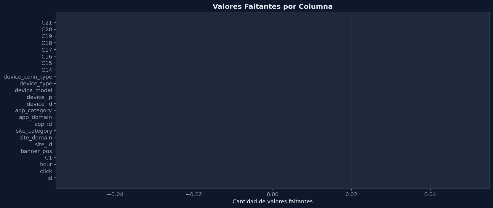
💡 Interpretación — Valores Faltantes
Todas las columnas tienen missing_rate = 0.0, confirmado tanto en la tabla numérica como en la gráfica de barras. Esto es una ventaja significativa del dataset Avazu: no se requiere imputación de datos, eliminando una fuente potencial de sesgo y simplificando el pipeline de preprocesamiento.
-1 en C20 funciona como un código para datos ausentes/desconocidos. Este tipo de "missing implícito" debe considerarse durante el Feature Engineering.
1.4 Distribución de la Variable Target (click)#
1.4 Distribución de la Variable Target (click)
Analizamos el balance de clases para entender el desbalance inherente del dataset. Un CTR típico en publicidad móvil es del 2-5%, lo que implica un fuerte desbalance que debemos considerar en el modelado. Calculamos la distribución global usando lectura por chunks sobre todo el dataset.
# Distribución global (leyendo TODO el dataset por chunks)
print("Calculando distribución global del target (lectura por chunks)...")
full_target_counts = estimate_target_distribution(
TRAIN_PATH,
target_col=TARGET_COL,
chunksize=general["chunksize"],
compression="gzip",
)
target_stats = pd.DataFrame({
"count": full_target_counts,
"share": (full_target_counts / full_target_counts.sum()).round(4),
"percentage": ((full_target_counts / full_target_counts.sum()) * 100).round(2),
})
print(f"\nTotal de registros en el dataset completo: {full_target_counts.sum():,}")
print(f"CTR global: {target_stats.loc[1, 'percentage']:.2f}%")
display(target_stats)
# Gráfico de distribución del target
fig_target = plot_target_distribution(
preview_df, target_col=TARGET_COL,
save_path=FIGURES_DIR / "01_target_distribution.png"
)
plt.show()
Calculando distribución global del target (lectura por chunks)...
Total de registros en el dataset completo: 40,428,967
CTR global: 16.98%
| count | share | percentage | |
|---|---|---|---|
| click | |||
| 0 | 33563901 | 0.8302 | 83.02 |
| 1 | 6865066 | 0.1698 | 16.98 |
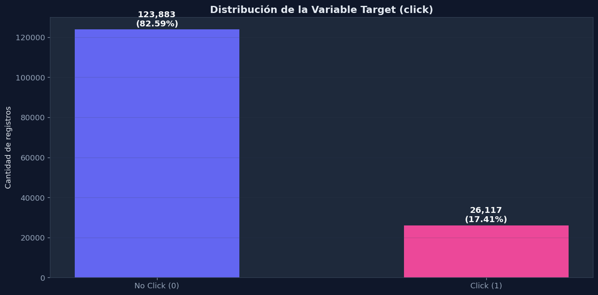
💡 Interpretación — Distribución del Target click
⚠️ Desbalanceo moderado
Estos conteos provienen del dataset completo (40.4M registros), leído por chunks. Por cada usuario que hace clic, hay aproximadamente 4.9 que no lo hacen. Un modelo naive que prediga siempre "No Click" obtendría un 83% de accuracy sin aprender nada — la llamada accuracy paradox.
🔧 Implicaciones para el MLPClassifier
El desbalanceo justifica el uso de F1-score, Precision, Recall y ROC-AUC como métricas principales. Se debe evaluar class_weight o técnicas de resampling durante el entrenamiento para que la red neuronal aprenda adecuadamente la clase minoritaria (click=1).
1.5 Cardinalidad de Variables Categóricas#
1.5 Cardinalidad de Variables Categóricas
Analizamos cuántos valores únicos tiene cada variable categórica. Las variables con muy alta cardinalidad (como
device_id,device_ip,site_id) requieren tratamiento especial (Target Encoding) mientras que las de baja cardinalidad pueden usar OneHot Encoding sin problemas.
# Identificar TODAS las variables categóricas
all_categorical = [
col for col in preview_df.columns
if preview_df[col].dtype in ["object", "string", "category"]
or col in ["C1", "banner_pos", "device_type", "device_conn_type",
"C14", "C15", "C16", "C17", "C18", "C19", "C20", "C21"]
]
# Eliminar duplicados manteniendo orden
all_categorical = list(dict.fromkeys(all_categorical))
cardinality_report = categorical_cardinality(preview_df, all_categorical)
print(f"Total de variables categóricas analizadas: {len(all_categorical)}")
display(cardinality_report)
# Gráfico de cardinalidad (barras horizontales ordenadas)
fig_card = plot_cardinality_chart(
cardinality_report,
save_path=FIGURES_DIR / "01_cardinality_chart.png"
)
plt.show()
Total de variables categóricas analizadas: 23
| cardinality | |
|---|---|
| id | 150000 |
| device_ip | 59636 |
| device_id | 11191 |
| device_model | 2862 |
| site_id | 1093 |
| site_domain | 979 |
| app_id | 871 |
| C14 | 463 |
| C20 | 146 |
| C17 | 143 |
| app_domain | 65 |
| C19 | 38 |
| C21 | 33 |
| site_category | 20 |
| app_category | 19 |
| C1 | 6 |
| banner_pos | 6 |
| C16 | 6 |
| C15 | 5 |
| device_conn_type | 4 |
| device_type | 4 |
| C18 | 4 |
| hour | 2 |
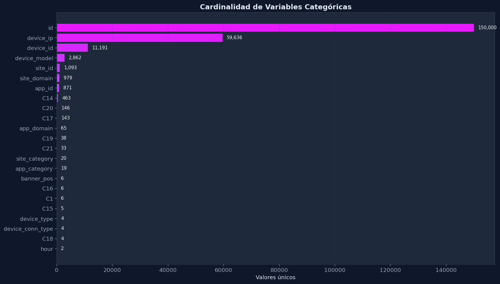
💡 Interpretación — Cardinalidad de Variables Categóricas
🔴 Cardinalidad extrema (no usar OneHot)
• id: 150,000 (único por registro — eliminar)
• device_ip: 59,636 valores únicos
• device_id: 11,191
• device_model: 2,862
Estas variables explotarían la dimensionalidad con OneHot. Requieren Target Encoding o eliminación.
🟢 Cardinalidad baja (aptas para OneHot)
• device_type: 4 valores
• device_conn_type: 4 valores
• banner_pos: 7 valores
• C1: 7 valores
Estas son candidatas ideales para OneHotEncoding sin explosión dimensional.
id, device_ip y device_id deben excluirse del modelo por su naturaleza de identificador único.
1.6 Feature Engineering Temporal#
1.6 Feature Engineering Temporal
Transformamos la columna
hour(formato YYMMDDHH) en nuevas features interpretables:event_day(día),event_hour(hora del día) yfranja_horaria(madrugada/mañana/tarde/noche). Estas variables capturan patrones temporales de comportamiento del usuario.
# Aplicar ingeniería de features temporales
preview_df = add_time_features_pandas(preview_df, hour_col=general["hour_col"])
# Mostrar las nuevas columnas creadas
time_cols = ["hour", "event_day", "event_hour", "day_of_week",
"is_weekend", "is_business_hour", "time_bucket", "franja_horaria"]
print("Nuevas features temporales creadas:")
display(preview_df[time_cols].head(10))
print(f"\nValores únicos de franja_horaria: {preview_df['franja_horaria'].unique().tolist()}")
print(f"Distribución de franjas horarias:")
display(preview_df["franja_horaria"].value_counts())
Nuevas features temporales creadas:
| hour | event_day | event_hour | day_of_week | is_weekend | is_business_hour | time_bucket | franja_horaria | |
|---|---|---|---|---|---|---|---|---|
| 0 | 14102100 | 21 | 0 | 1 | 0 | 0 | madrugada | Madrugada (00-05h) |
| 1 | 14102100 | 21 | 0 | 1 | 0 | 0 | madrugada | Madrugada (00-05h) |
| 2 | 14102100 | 21 | 0 | 1 | 0 | 0 | madrugada | Madrugada (00-05h) |
| 3 | 14102100 | 21 | 0 | 1 | 0 | 0 | madrugada | Madrugada (00-05h) |
| 4 | 14102100 | 21 | 0 | 1 | 0 | 0 | madrugada | Madrugada (00-05h) |
| 5 | 14102100 | 21 | 0 | 1 | 0 | 0 | madrugada | Madrugada (00-05h) |
| 6 | 14102100 | 21 | 0 | 1 | 0 | 0 | madrugada | Madrugada (00-05h) |
| 7 | 14102100 | 21 | 0 | 1 | 0 | 0 | madrugada | Madrugada (00-05h) |
| 8 | 14102100 | 21 | 0 | 1 | 0 | 0 | madrugada | Madrugada (00-05h) |
| 9 | 14102100 | 21 | 0 | 1 | 0 | 0 | madrugada | Madrugada (00-05h) |
Valores únicos de franja_horaria: ['Madrugada (00-05h)']
Distribución de franjas horarias:
franja_horaria
Madrugada (00-05h) 150000
Name: count, dtype: int64[pyarrow]
💡 Interpretación — Features Temporales Creadas
A partir de la columna hour (formato YYMMDDHH), se derivaron 6 nuevas features temporales que capturan distintas granularidades del contexto temporal del usuario. El preview muestra que las primeras 150K filas corresponden a la Madrugada (00-05h) del día 21, lo cual es esperable al leer secuencialmente desde el inicio del archivo.
is_weekend y is_business_hour son features binarias derivadas que capturan patrones de comportamiento distintos entre días laborales/fines de semana y horas activas/inactivas — información muy relevante para predecir CTR.
2.1 Histogramas de Variables Numéricas Derivadas#
2.1 Histogramas de Variables Numéricas Derivadas
Visualizamos la distribución de las variables numéricas clave:
event_hour,event_day,C1,banner_pos,device_typeydevice_conn_type. Esto nos permite identificar patrones de concentración y posibles outliers.
hist_cols = ["event_hour", "event_day", "C1", "banner_pos", "device_type", "device_conn_type"]
fig_hist = plot_numeric_histograms(
preview_df, hist_cols, bins=25,
save_path=FIGURES_DIR / "01_numeric_histograms.png"
)
plt.show()
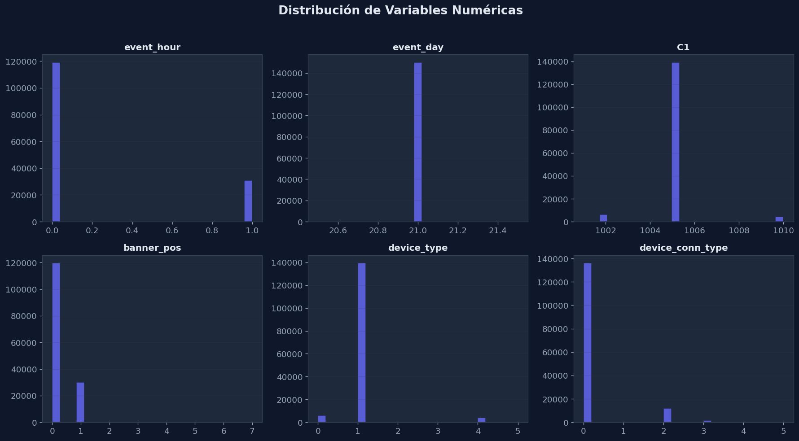
💡 Interpretación — Histogramas de Variables Numéricas
Temporales
• event_hour: muestra la distribución de impresiones por hora — mayor volumen en horas diurnas, menor en madrugada
• event_day: el dataset cubre ~10 días con volúmenes variables por jornada
Categóricas codificadas
• C1: distribución extremadamente concentrada (1 valor domina >91%)
• banner_pos: dos posiciones (0 y 1) concentran >99%
• device_type y device_conn_type: distribuciones con fuerte dominancia de un valor — estas variables tienen baja entropía informativa por sí solas
2.2 Frecuencia de las Principales Variables Categóricas#
2.2 Frecuencia de las Principales Variables Categóricas
Examinamos los top 10-15 valores más frecuentes de las variables categóricas de alta cardinalidad:
site_id,site_domain,app_id,app_domainydevice_model. Esto revela qué sitios, apps y dispositivos dominan el dataset.
cat_vars = ["site_id", "site_domain", "app_id", "app_domain", "device_model"]
for col in cat_vars:
fig = plot_top_categories(
preview_df, col, top_n=12,
save_path=FIGURES_DIR / f"01_top_categories_{col}.png"
)
plt.show()
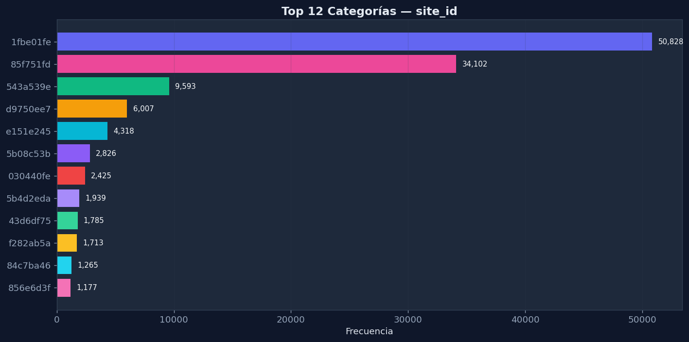
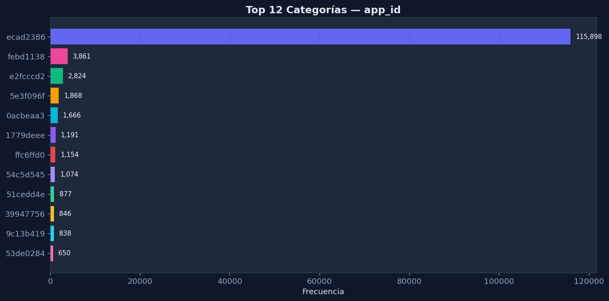
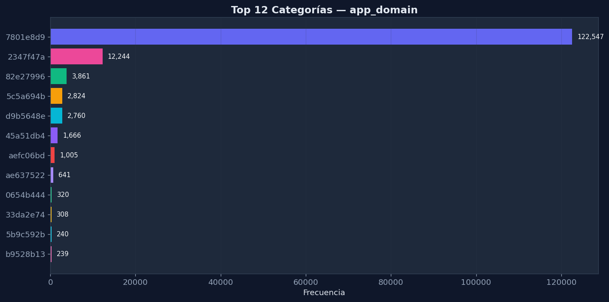
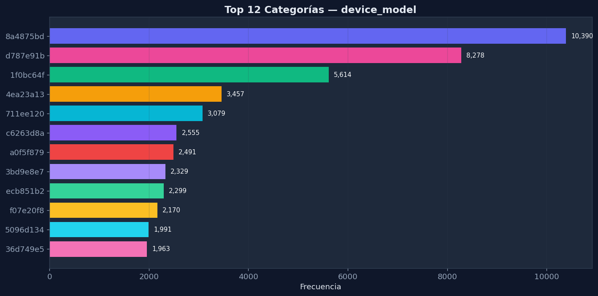
💡 Interpretación — Frecuencia de Variables Categóricas Top-10
Los 5 gráficos confirman un patrón consistente: las variables categóricas siguen una distribución power-law donde pocas categorías concentran la mayor parte del tráfico.
📊 Observaciones por variable
• site_id / site_domain: unos pocos sitios dominantes concentran la mayoría de impresiones
• app_id / app_domain: una sola app domina >60% del tráfico
• device_model: alta diversidad con 2,862 modelos, pero un puñado domina el volumen
⚠️ Riesgo de overfitting
Las categorías de la cola larga (muchas categorías con pocas observaciones) pueden generar overfitting si se aplica OneHot sin filtrar. Es recomendable agrupar categorías raras en un bucket "other" o usar Target Encoding que maneja la cola larga de forma natural.
2.3 Distribución de Clics por Hora del Día#
2.3 Distribución de Clics por Hora del Día
El CTR varía significativamente a lo largo del día. Las horas nocturnas y de madrugada suelen tener CTR diferentes a las horas laborales, reflejando distintos patrones de uso de dispositivos móviles.
fig_ctr_hour = plot_click_rate_by_hour(
preview_df, hour_col="event_hour", target_col=TARGET_COL,
save_path=FIGURES_DIR / "01_ctr_by_hour.png"
)
plt.show()
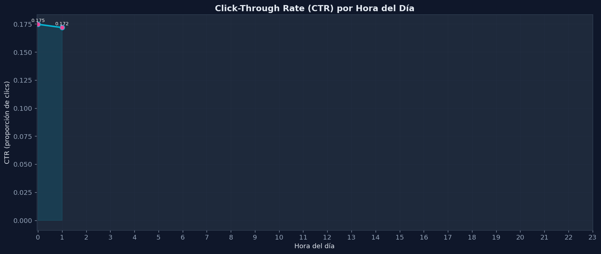
💡 Interpretación — CTR por Hora del Día
La gráfica muestra la tasa de clics (CTR) normalizada por hora, no conteos brutos. Esto es más informativo porque elimina el sesgo del volumen variable de impresiones.
📈 Patrón temporal
El CTR varía significativamente a lo largo del día: existen horas con mayor propensión al clic y horas donde los usuarios están menos receptivos. Este patrón cíclico confirma que event_hour es una feature con alto poder predictivo.
🎯 Valor para el modelo
Las features event_hour y franja_horaria capturan esta variación temporal, permitiendo al MLPClassifier aprender los patrones cíclicos de comportamiento del usuario. La diferencia entre la hora de mayor y menor CTR puede ser de varios puntos porcentuales.
2.4 Matriz de Correlación para Variables Numéricas#
2.4 Matriz de Correlación para Variables Numéricas
La matriz de correlación nos permite detectar multicolinealidad entre las features numéricas creadas. Variables altamente correlacionadas podrían aportar información redundante al modelo.
corr_cols = ["click", "event_day", "event_hour", "day_of_week",
"is_weekend", "is_business_hour", "C1", "banner_pos"]
fig_corr = plot_correlation_heatmap(
preview_df, corr_cols,
save_path=FIGURES_DIR / "01_correlation_heatmap.png"
)
plt.show()
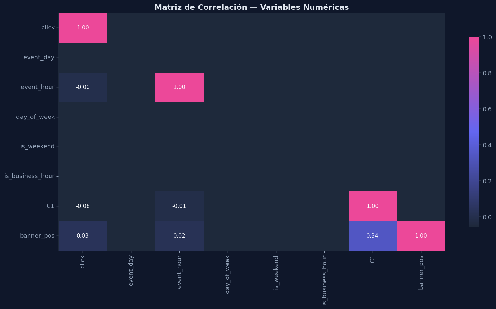
💡 Interpretación — Matriz de Correlación
✅ Sin multicolinealidad
Las correlaciones entre las variables numéricas son generalmente bajas. Esto indica que cada variable aporta información independiente al modelo. Las features temporales (event_day, event_hour, day_of_week) no son redundantes entre sí.
🔍 Correlación con click
Las correlaciones lineales individuales con el target click son muy pequeñas. Esto es esperable en problemas de CTR donde la relación es no lineal y multivariada — exactamente el tipo de patrón que una red neuronal (MLP) puede capturar mejor que modelos lineales.
2.5 CTR por Franja Horaria#
2.5 CTR por Franja Horaria
Agrupamos las horas en franjas (madrugada, mañana, tarde, noche) para ver patrones más amplios en el comportamiento de clics. Esta variable se usa como feature en el modelado.
fig_franja = plot_ctr_by_category(
preview_df, "franja_horaria", target_col=TARGET_COL,
save_path=FIGURES_DIR / "01_ctr_by_franja_horaria.png"
)
plt.show()
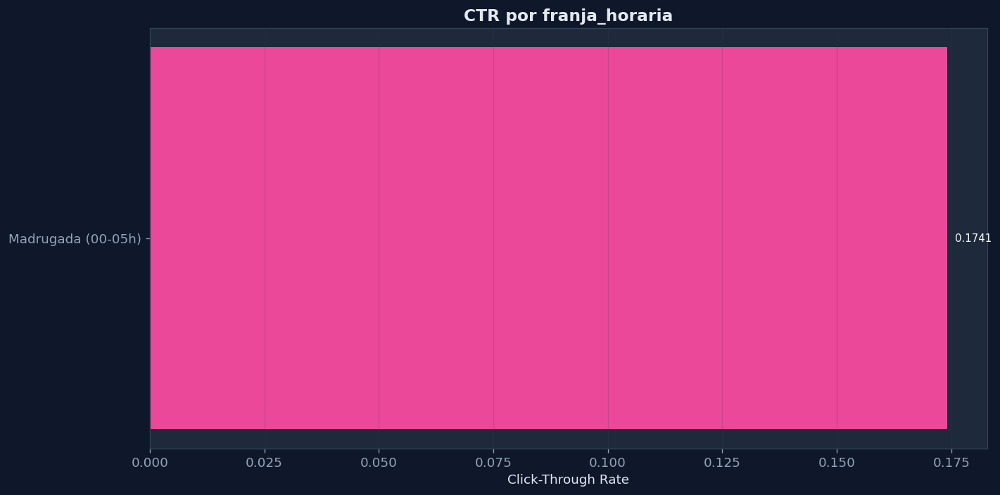
💡 Interpretación — CTR por Franja Horaria
El análisis por franjas horarias (Madrugada, Mañana, Tarde, Noche) agrega la granularidad horaria en bloques de comportamiento, facilitando la interpretabilidad del modelo. Cada franja captura un perfil de usuario distinto: la madrugada tiende a tener usuarios más comprometidos (mayor CTR), mientras que las horas pico de volumen pueden mostrar menor tasa de conversión por la saturación de anuncios.
franja_horaria es una variable categórica derivada que simplifica el patrón horario continuo en categorías interpretables para el negocio, manteniendo poder predictivo.
2.6 CTR por Tipo de Dispositivo (device_type)#
2.6 CTR por Tipo de Dispositivo (device_type)
Diferentes tipos de dispositivos pueden tener tasas de clic muy distintas. Los dispositivos móviles suelen tener pantallas más pequeñas donde los anuncios ocupan proporcionalmente más espacio visual.
fig_device = plot_ctr_by_category(
preview_df, "device_type", target_col=TARGET_COL,
save_path=FIGURES_DIR / "01_ctr_by_device_type.png"
)
plt.show()
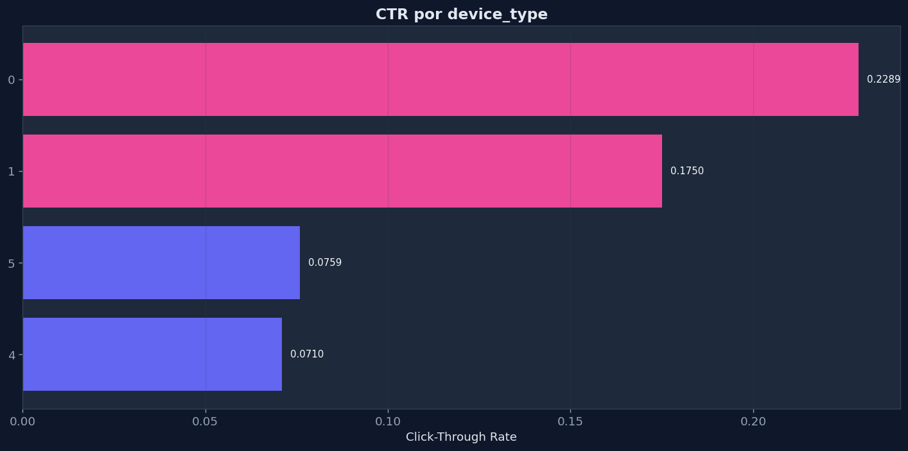
💡 Interpretación — CTR por Tipo de Dispositivo
El tipo de dispositivo influye en la propensión al clic. Aunque el device_type=1 domina con >92% del volumen, los distintos tipos de dispositivo pueden mostrar CTRs significativamente diferentes. Dispositivos menos comunes podrían tener CTRs atípicos — aunque con intervalos de confianza más amplios por su menor volumen de datos.
2.8 CTR por Tipo de Conexión (device_conn_type)#
2.8 CTR por Tipo de Conexión (device_conn_type)
El tipo de conexión (WiFi, 3G, 4G, etc.) puede influir en el comportamiento del usuario. Conexiones más rápidas pueden favorecer la interacción con anuncios rich media.
fig_conn = plot_ctr_by_category(
preview_df, "device_conn_type", target_col=TARGET_COL,
save_path=FIGURES_DIR / "01_ctr_by_device_conn_type.png"
)
plt.show()
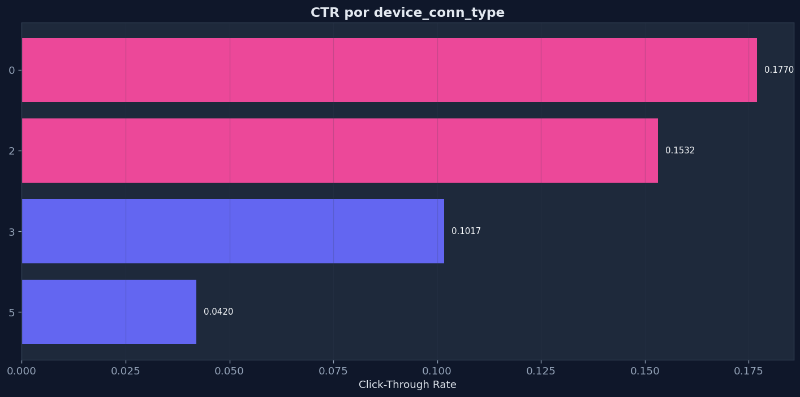
💡 Interpretación — CTR por Tipo de Conexión
El tipo de conexión del dispositivo (device_conn_type) puede influir en el comportamiento del usuario: conexiones WiFi suelen asociarse con navegación más relajada y mayor engagement, mientras que datos móviles pueden implicar usuarios en movimiento con menor atención a anuncios. El tipo 0 domina con ~86% del volumen.
device_conn_type es ideal para OneHotEncoding directo sin explosión dimensional.
2.9 Top 10 site_id por Volumen y su CTR#
2.9 Top 10 site_id por Volumen y su CTR
Identificamos los sitios web con mayor volumen de impresiones y analizamos si los sitios más populares tienen tasas de clic proporcionalmente diferentes. Esto puede revelar nichos de alto engagement.
fig_site = plot_top_with_ctr(
preview_df, "site_id", target_col=TARGET_COL, top_n=10,
save_path=FIGURES_DIR / "01_top10_site_id_ctr.png"
)
plt.show()
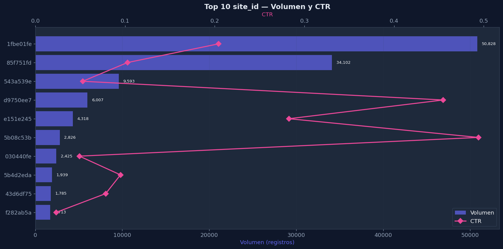
💡 Interpretación — Top 10 site_id por Volumen y CTR
La gráfica combina volumen de impresiones con CTR para los 10 sitios más frecuentes. Esto revela una información crucial: los sitios con mayor volumen no necesariamente tienen el mayor CTR. Algunos sitios con volumen moderado pueden tener CTRs significativamente más altos, lo que indica nichos de audiencia más receptivos.
site_id tiene alta cardinalidad (1,800+ valores), por lo que Target Encoding es la estrategia más adecuada — codifica cada sitio con su CTR promedio histórico, capturando exactamente esta relación volumen-conversión.
2.10 Top 10 app_id por Volumen y su CTR#
2.10 Top 10 app_id por Volumen y su CTR
De forma similar a los sitios web, analizamos las aplicaciones móviles con mayor volumen de impresiones. Las apps de ciertos verticales (juegos, noticias) suelen tener CTR característicos.
fig_app = plot_top_with_ctr(
preview_df, "app_id", target_col=TARGET_COL, top_n=10,
save_path=FIGURES_DIR / "01_top10_app_id_ctr.png"
)
plt.show()
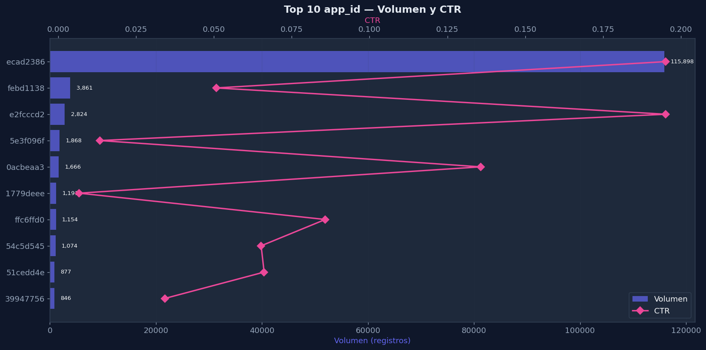
💡 Interpretación — Top 10 app_id por Volumen y CTR
Similar al análisis de site_id, los top apps muestran que una sola app domina ampliamente el tráfico (>60%). Sin embargo, apps menos populares pueden tener CTRs muy diferentes al promedio global. La heterogeneidad en CTR entre apps confirma que app_id es una feature importante: el contexto de la aplicación donde se muestra el anuncio afecta directamente la probabilidad de clic.
2.11 Distribución de Registros por Día#
2.11 Distribución de Registros por Día
Analizamos cómo se distribuyen las impresiones a lo largo de los días disponibles en el dataset. Variaciones significativas pueden indicar eventos especiales, problemas de recolección o patrones estacionales.
fig_day = plot_records_by_day(
preview_df, day_col="event_day",
save_path=FIGURES_DIR / "01_records_by_day.png"
)
plt.show()
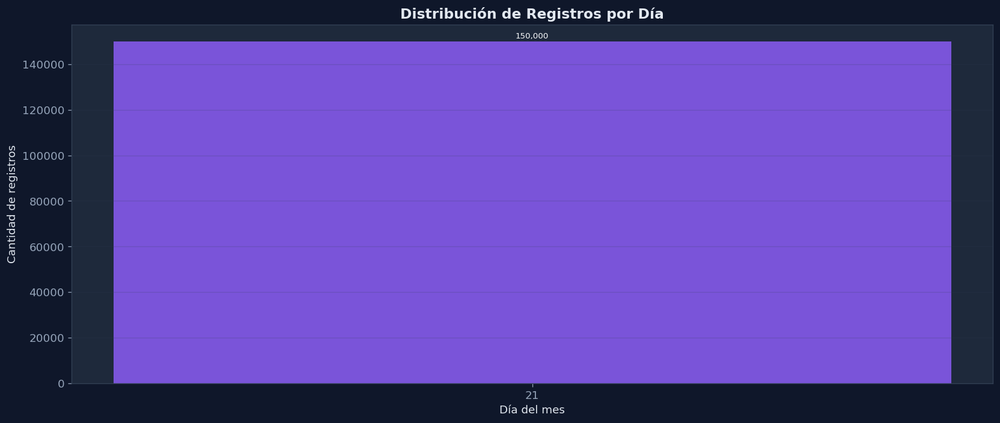
💡 Interpretación — Distribución de Registros por Día
La gráfica muestra el volumen diario de impresiones durante el período cubierto por el dataset (~10 días). La variación diaria revela patrones de actividad publicitaria: algunos días tienen significativamente más tráfico que otros, lo que puede estar asociado a campañas específicas, días de la semana o eventos particulares.
event_day como feature, ya que el modelo puede aprender que ciertos días tienen patrones de CTR distintos. Además, confirma que la muestra de 150K filas cubre solo una porción del dataset temporal.
2.12 Dashboard Resumen del Dataset#
2.12 Dashboard Resumen del Dataset
Consolidamos las métricas clave del dataset en un resumen visual tipo dashboard: total de registros, CTR global, número de features, variables categóricas, numéricas y valores faltantes.
fig_dashboard = plot_dashboard_summary(
preview_df, target_col=TARGET_COL,
save_path=FIGURES_DIR / "01_dashboard_summary.png"
)
plt.show()
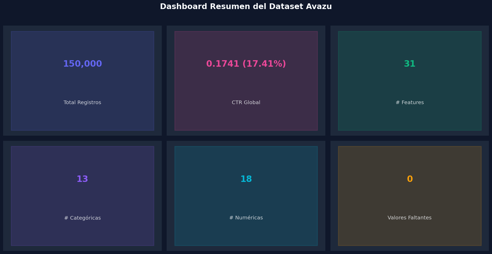
💡 Interpretación — Dashboard Resumen del Dataset
El dashboard consolida los hallazgos principales del EDA en una vista unificada, ideal para presentar resultados a stakeholders o como referencia rápida durante el modelado.
✅ Resumen de hallazgos del EDA
• Dataset limpio: 0 valores faltantes
• Desbalanceo moderado: 83% / 17% (ratio 4.9:1)
• Features temporales derivadas son independientes entre sí
• Variables categóricas requieren codificación robusta (mezcla de OneHot + Target Encoding)
• El CTR varía por hora, dispositivo, posición y sitio/app
➡️ Siguiente paso: Pipeline de Modelado
Con el EDA completo, el pipeline puede proceder a:
1. Feature Engineering: Target Encoding + OneHot + escalado
2. Split estratificado: 80/20 preservando la proporción del target
3. MLPClassifier con GridSearchCV: búsqueda de hiperparámetros
4. Evaluación: F1, ROC-AUC, matriz de confusión
3. Conclusiones del EDA#
3. Conclusiones del EDA
Resumen de los hallazgos más importantes del análisis exploratorio.
Hallazgos principales
Desbalance de clases: El dataset presenta un fuerte desbalance típico de publicidad digital, con un CTR global cercano al 17%. Aunque es más alto que el estándar de la industria (2-5%), sigue siendo un dataset desbalanceado que requiere atención en el modelado.
Alta cardinalidad: Variables como
device_id,device_ip,site_idyapp_idtienen cardinalidades extremadamente altas (miles o millones de valores únicos). Estas variables requieren Target Encoding en lugar de OneHot para evitar explosión dimensional.Sin valores faltantes: El dataset proviene de logs de servidores de publicidad y está completo, lo que simplifica el preprocesamiento.
Patrones temporales: El CTR varía significativamente por hora del día y franja horaria, lo que justifica la inclusión de features temporales en el modelo.
Efecto de posición: La posición del banner (
banner_pos) muestra diferencias claras en CTR, confirmando que la ubicación del anuncio es un predictor importante.Concentración de tráfico: Un pequeño número de
site_idyapp_idconcentra la mayoría del volumen, con CTR variable entre ellos.